① <details> / <summary> — Collapsible Accordion
Works directly on github.com — click to expand, content is fully copyable.
🐍 Python
# Fibonacci sequence
def fibonacci(n: int) -> list[int]:
a, b = 0, 1
result = []
while a < n:
result.append(a)
a, b = b, a + b
return result
print(fibonacci(100))
# [0, 1, 1, 2, 3, 5, 8, 13, 21, 34, 55, 89]
🟨 JavaScript
// Fibonacci sequence
function fibonacci(n) {
const result = [];
let [a, b] = [0, 1];
while (a < n) {
result.push(a);
[a, b] = [b, a + b];
}
return result;
}
console.log(fibonacci(100));
// [0, 1, 1, 2, 3, 5, 8, 13, 21, 34, 55, 89]
🐹 Go
package main
import "fmt"
func fibonacci(n int) []int {
result := []int{}
a, b := 0, 1
for a < n {
result = append(result, a)
a, b = b, a+b
}
return result
}
func main() {
fmt.Println(fibonacci(100))
// [0 1 1 2 3 5 8 13 21 34 55 89]
}
🦀 Rust
// Fibonacci sequence
fn fibonacci(n: u64) -> Vec<u64> {
let mut result = Vec::new();
let (mut a, mut b) = (0u64, 1u64);
while a < n {
result.push(a);
(a, b) = (b, a + b);
}
result
}
fn main() {
println!("{:?}", fibonacci(100));
// [0, 1, 1, 2, 3, 5, 8, 13, 21, 34, 55, 89]
}
② CSS Radio-Button Tabs — Code Examples ✅ interactive here
This technique requires <style> — stripped on github.com, works here.
③ Screenshot Gallery Tabs ✅ interactive here
Taskbook CLI screenshots shown in interactive tabs — impossible on github.com without JS/CSS.
④ Interactive SVG via <foreignObject>
An SVG file with embedded HTML+CSS. Works when opened directly in a browser.
GitHub strips <foreignObject> when rendering SVGs via <img> tags.
→ Open interactive-tabs.svg directly
Click the link above to open the SVG in a new tab. The tabs are fully clickable.
Also try the animated version (works as a GitHub README <img>):

Summary
| Technique | github.com | GitHub Pages | Copy-paste |
|---|---|---|---|
<details>/<summary> | ✅ | ✅ | ✅ |
HTML <table> | ✅ | ✅ | ✅ |
| Animated SVG | ✅ | ✅ | ❌ |
| CSS radio-button tabs | ❌ | ✅ | ✅ |
| JS tabs | ❌ | ✅ | ✅ |
SVG <foreignObject> | ❌ stripped | ✅ | ✅ |